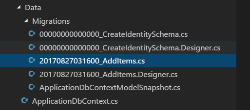

创建变更
变更按时间记录着数据库结构的变化。它们使以下的操作成为可能：撤销(回滚)一部分修改，或创建一个新的数据库——与原有数据库结构一致。有了变更，你有一个完整的数据库历史，记录着对数据库的修改，例如添加或删除字段（以及整个表）。
上一章节里，你在数据库上下文里添加了一个 Items 集合。既然现在数据库上下文里包括了一个集合（或者说表），而数据库里没有它，你就需要创建一个变更来修改数据库：
dotnet ef migrations add AddItems
这行代码通过检查你在数据库上下文里所做的修改，创建了一个新的变更，名为 AddItems。
如果你看到这样的报错:
No executable found matching command "dotnet-ef"，请确保在正确的目录下。 这些命令必须在项目的根目录下执行(Program.cs所在目录)。译者注：如果你使用 3.0 或以上版本的 SDK，需要手动安装
dotnet-ef工具，原因请参考 dotnet ef not found in .NET Core 3，使用如下命令进行安装。
dotnet tool install --global dotnet-ef
如果你打开 Data/Migrations 目录，你将会看到:

第一个变更文件（00_CreateIdentitySchema.cs），是在你执行 dotnet new 的时候创建并应用的。 变更 AddItem 带有你创建它时候的时间戳。
你可以用
dotnet ef migrations list命令查看一个变更的列表。
如果你打开一个变更文件，可以看到两个方法，名字分别是 Up 和 Down:
Data/Migrations/
protected override void Up(MigrationBuilder migrationBuilder)
{
// (... some code)
migrationBuilder.CreateTable(
name: "Items",
columns: table => new
{
Id = table.Column<Guid>(nullable: false),
DueAt = table.Column<DateTimeOffset>(nullable: true),
IsDone = table.Column<bool>(nullable: false),
Title = table.Column<string>(nullable: true)
},
constraints: table =>
{
table.PrimaryKey("PK_Items", x => x.Id);
});
// (some code...)
}
protected override void Down(MigrationBuilder migrationBuilder)
{
// (... some code)
migrationBuilder.DropTable(
name: "Items");
// (some code...)
}
将变更应用到数据库时 Up 方法将会被执行。因为你在数据库上下文里添加了一个 DbSet<TodoItem> ，应用变更时 Entity Framework Core 会创建一个 Items 表（其列与 TodoItem 相匹配)。
Down 方法刚好相反：当你需要撤销(回滚)变更时，Items 表将会被丢弃。
绕开 SQLite 的局限性
如果你按原样执行变更，会遭遇 SQLite 数据库的局限性带来的问题，要修复它，可以这样绕开：
- 在
Up方法里注释掉或删除migrationBuilder.AddForeignKey那些行。 - 在
Down方法里注释掉或删除migrationBuilder.DropForeignKey那些行。
如果你使用完善的数据库，如 SQL Server 或者 MySQL，就不需要这样（有点旁门左道的）绕弯了。
应用变更
创建变更的最后一步，就是要应用它(们)到数据库中:
dotnet ef database update
这条命令会导致 Entity Framework Core 在数据库中创建 Items 表。
如果你想回滚数据库，你可以提供 上一个 迁移的名称：
dotnet ef database update CreateIdentitySchema这将运行所有迟于你指定变更的Down方法。
如果你需要完整的抹掉数据库并重新开始，运行dotnet ef database drop然后运行dotnet ef database update，重新搭建数据库并应用到到当前的变更。
搞定! 数据库和上下文都已就绪。接下来，你将在服务层使用上下文。
Create a migration
Migrations keep track of changes to the database structure over time. They make it possible to undo (roll back) a set of changes, or create a second database with the same structure as the first. With migrations, you have a full history of modifications like adding or removing columns (and entire tables).
In the previous chapter, you added an Items set to the context. Since the context now includes a set (or table) that doesn't exist in the database, you need to create a migration to update the database:
dotnet ef migrations add AddItems
This creates a new migration called AddItems by examining any changes you've made to the context.
If you get an error like
No executable found matching command "dotnet-ef", make sure you're in the right directory. These commands must be run from the project root directory (where theProgram.csfile is).
If you open up the Data/Migrations directory, you'll see a few files:
The first migration file (with a name like 00_CreateIdentitySchema.cs) was created and applied for you way back when you ran dotnet new. Your new AddItem migration is prefixed with a timestamp when you create it.
You can see a list of migrations with
dotnet ef migrations list.
If you open your migration file, you'll see two methods called Up and Down:
Data/Migrations/
protected override void Up(MigrationBuilder migrationBuilder)
{
// (... some code)
migrationBuilder.CreateTable(
name: "Items",
columns: table => new
{
Id = table.Column<Guid>(nullable: false),
DueAt = table.Column<DateTimeOffset>(nullable: true),
IsDone = table.Column<bool>(nullable: false),
Title = table.Column<string>(nullable: true)
},
constraints: table =>
{
table.PrimaryKey("PK_Items", x => x.Id);
});
// (some code...)
}
protected override void Down(MigrationBuilder migrationBuilder)
{
// (... some code)
migrationBuilder.DropTable(
name: "Items");
// (some code...)
}
The Up method runs when you apply the migration to the database. Since you added a DbSet<TodoItem> to the database context, Entity Framework Core will create an Items table (with columns that match a TodoItem) when you apply the migration.
The Down method does the opposite: if you need to undo (roll back) the migration, the Items table will be dropped.
Workaround for SQLite limitations
There are some limitations of SQLite that get in the way if you try to run the migration as-is. Until this problem is fixed, use this workaround:
- Comment out or remove the
migrationBuilder.AddForeignKeylines in theUpmethod. - Comment out or remove any
migrationBuilder.DropForeignKeylines in theDownmethod.
If you use a full-fledged SQL database, like SQL Server or MySQL, this won't be an issue and you won't need to do this (admittedly hackish) workaround.
Apply the migration
The final step after creating one (or more) migrations is to actually apply them to the database:
dotnet ef database update
This command will cause Entity Framework Core to create the Items table in the database.
If you want to roll back the database, you can provide the name of the previous migration:
dotnet ef database update CreateIdentitySchemaThis will run theDownmethods of any migrations newer than the migration you specify.If you need to completely erase the database and start over, run
dotnet ef database dropfollowed bydotnet ef database updateto re-scaffold the database and bring it up to the current migration.
That's it! Both the database and the context are ready to go. Next, you'll use the context in your service layer.